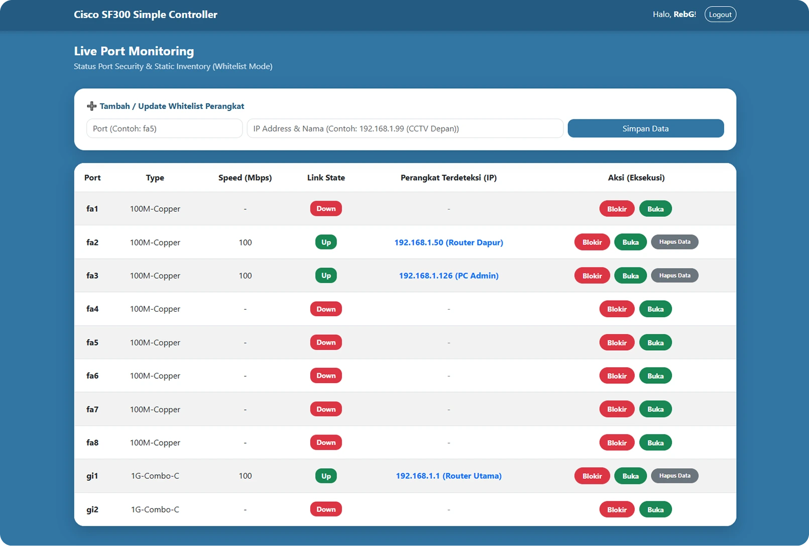
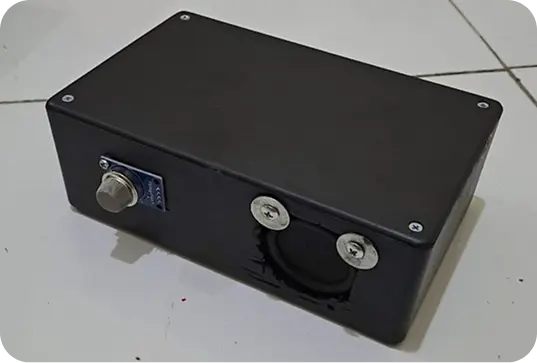
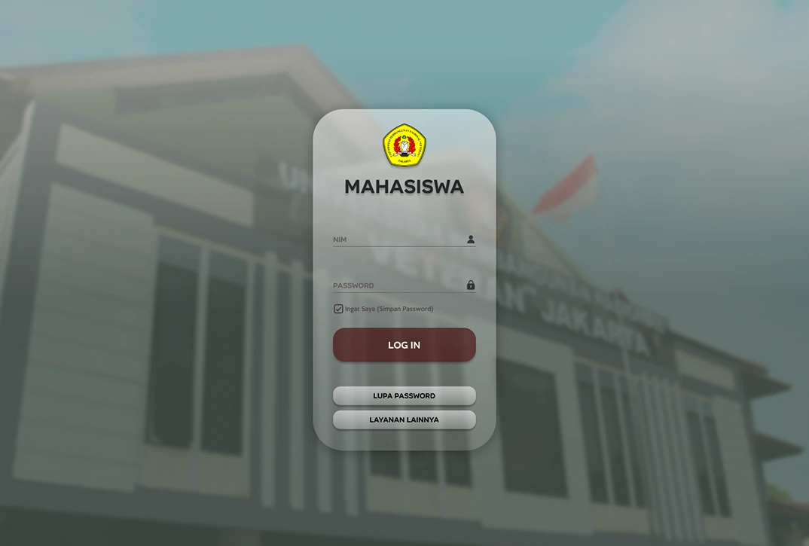

Network Telemetry & Dashboard
[Cisco SF-300 / Python / InfluxDB / Grafana]
A lightweight telemetry system bridging physical hardware with modern time-series visualization to track live bandwidth utilization without heavy CLI overhead.

Port Security Automation
[Cisco SF-300 / Python]
>A custom web-based dashboard utilizing Python and Netmiko to simplify and automate Layer 2 network security protocols, including manual MAC address whitelisting.

MikroTik Network Segmentation & Firewall Lab
[RouterOS / VLAN / Layer 3 Firewall]
A network segmentation lab implementing dual VLANs, Inter-VLAN routing, DHCP, and firewall filtering to isolate trusted and untrusted segments while maintaining internet access through NAT.

IoT Gas Leak Detector
[ESP-NOW / Hardware]
An autonomous IoT safety system featuring router-independent M2M communication to automatically trip electrical breakers during emergencies.

Legacy Router Security Bot
[Linksys E900 / Python / Telegram API]
A Telegram bot utilizing HTTP reverse-engineering to bypass legacy hardware limits, enabling live network monitoring and 1-click MAC filtering.

SIAKAD Desktop UI Redesign
[Figma / UI-UX]
A comprehensive visual interface redesign of a campus academic portal, focused on modernizing information hierarchy.